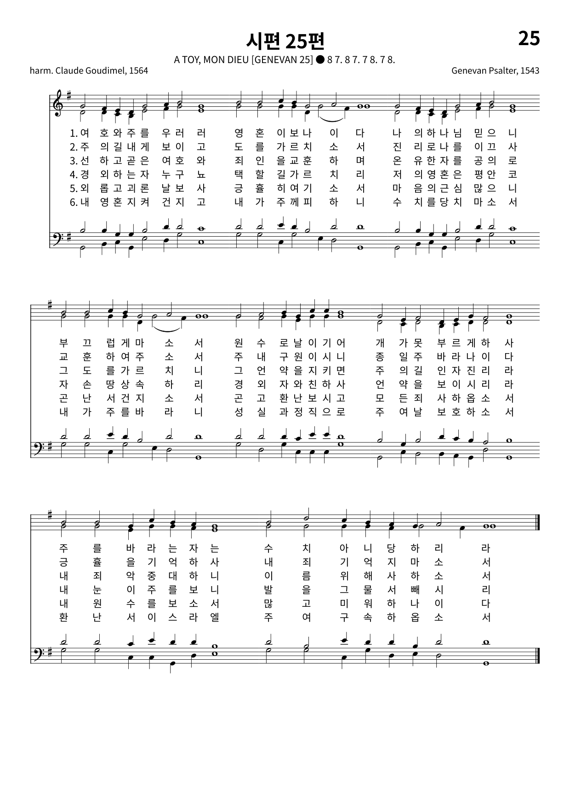

Psalm 25
A TOY, MON DIEU [GENEVAN 25] · 8 7. 8 7. 7 8. 7 8.
English title: Unto Thee, O LORD, My Savior
Tune: Genevan Psalter, 1543 · Harmony: Claude Goudimel, 1564 · Lyrics: Korean adaptation of Psalm 25 from the Korean Revised Version (AI draft adaptation · not yet theologically reviewed) · 6 stanzas
Score PDF MusicXML (for printing) MusicXML (for accompaniment, with prelude and repeats) Read Psalm 25 (Korean Revised Version)
Score
← Psalm 24 ListAccompaniment (in preparation)Psalm 26 →
Lyrics (Korean)
Stanza 1
여호와 주를 우러러
영혼이 보나이다
나의 하나님 믿으니
부끄럽게 마소서
원수로 날 이기어
개가 못 부르게 하사
주를 바라는 자는
수치 아니 당하리라
여호와 주를 우러러
영혼이 보나이다
나의 하나님 믿으니
부끄럽게 마소서
원수로 날 이기어
개가 못 부르게 하사
주를 바라는 자는
수치 아니 당하리라
Stanza 2
주의 길 내게 보이고
도를 가르치소서
진리로 나를 이끄사
교훈하여 주소서
주 내 구원이시니
종일 주 바라나이다
긍휼을 기억하사
내 죄 기억지 마소서
주의 길 내게 보이고
도를 가르치소서
진리로 나를 이끄사
교훈하여 주소서
주 내 구원이시니
종일 주 바라나이다
긍휼을 기억하사
내 죄 기억지 마소서
Stanza 3
선하고 곧은 여호와
죄인을 교훈하며
온유한 자를 공의로
그 도를 가르치니
그 언약을 지키면
주의 길 인자 진리라
내 죄악 중대하니
이름 위해 사하소서
선하고 곧은 여호와
죄인을 교훈하며
온유한 자를 공의로
그 도를 가르치니
그 언약을 지키면
주의 길 인자 진리라
내 죄악 중대하니
이름 위해 사하소서
Stanza 4
경외하는 자 누구뇨
택할 길 가르치리
저의 영혼은 평안코
자손 땅 상속하리
경외자와 친하사
언약을 보이시리라
내 눈이 주를 보니
발을 그물서 빼시리
경외하는 자 누구뇨
택할 길 가르치리
저의 영혼은 평안코
자손 땅 상속하리
경외자와 친하사
언약을 보이시리라
내 눈이 주를 보니
발을 그물서 빼시리
Stanza 5
외롭고 괴론 날 보사
긍휼히 여기소서
마음의 근심 많으니
곤난서 건지소서
곤고 환난 보시고
모든 죄 사하옵소서
내 원수를 보소서
많고 미워하나이다
외롭고 괴론 날 보사
긍휼히 여기소서
마음의 근심 많으니
곤난서 건지소서
곤고 환난 보시고
모든 죄 사하옵소서
내 원수를 보소서
많고 미워하나이다
Stanza 6
내 영혼 지켜 건지고
내가 주께 피하니
수치를 당치 마소서
내가 주를 바라니
성실과 정직으로
주여 날 보호하소서
환난서 이스라엘
주여 구속하옵소서
내 영혼 지켜 건지고
내가 주께 피하니
수치를 당치 마소서
내가 주를 바라니
성실과 정직으로
주여 날 보호하소서
환난서 이스라엘
주여 구속하옵소서